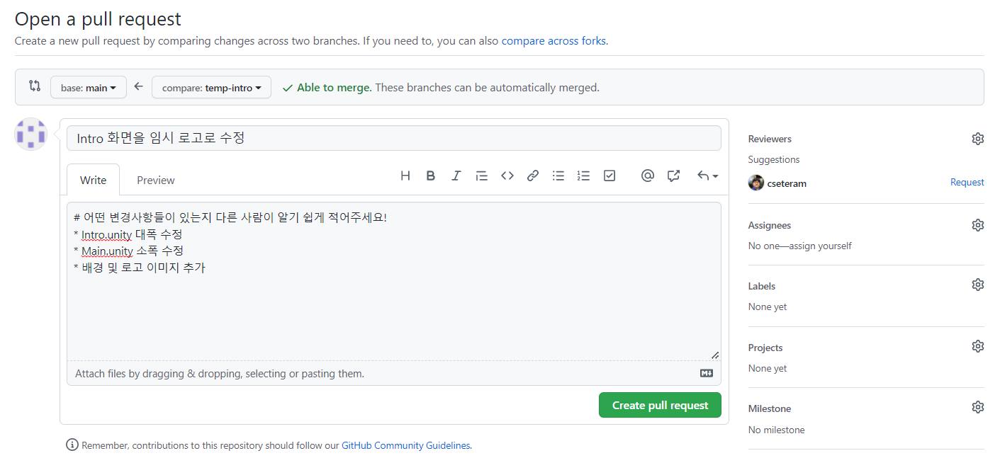

Introduction
이 문서는 Git을 처음 사용하는 신입회원이 Git에 친숙해질 수 있도록 UPnL에서 제작한 튜토리얼 문서이다. 이 튜토리얼을 통해 우리는 Git이라는 버전 관리 시스템을 사용하는 방법에 대해 간략히 배울 것이다.
문서를 읽을 때는 화면 오른쪽의 > 버튼을 눌러서 책을 넘기듯이 읽으면 된다. 목차는 화면 왼쪽에서 확인할 수 있다.
GitHub에서 이 문서의 소스 코드를 찾을 수 있으니 필요한 경우 참고하라.
실습도 따로 준비되어 있으니 UPnL 회원이라면 실습 문서를 따라가면서 쉽게 체험할 수 있다.
세팅
이 챕터에서는 Git을 사용하는데 필요한 작업에 대하여 알아본다. 우선 명령어를 입력할 수 있도록 터미널을 세팅하고 실행하는 방법에 대해 알아본다. 그리고 Git을 사용하기 위하여 설치 및 최초 설정을 진행한다. 마지막으로 GitHub을 이용하기 위한 인증 설정에 대해 설명한다.
터미널 세팅
Git을 설치하고 필요한 명령어를 입력하기 위해서는 우선 터미널을 실행하여야 한다.
Windows
Windows 에서 제공하는 차세대 터미널인 Windows Terminal을 사용한다. 이는 Microsoft Store를 실행한 후, "Windows Terminal"을 검색하여 설치하여 사용할 수 있다.

실행 시 기본값으로 Windows PowerShell이 열린다. 만약 다른 것이 열린다면 아래 화살표 버튼을 누르고 Windows PowerShell을 실행한다.

Linux
각 리눅스 배포판에서 기본으로 제공하는 터미널을 사용한다.
macOS
기본 터미널을 사용하여도 좋지만, iTerm2 터미널을 사용할 것을 권장한다. 다음과 같이 macOS 용 패키지 관리자인 Homebrew를 사용하여 쉽게 설치할 수 있다.
$ brew install --cask iterm2
설치
Git을 사용하려면 우선 설치를 하여야 한다. 이는 다음과 같이 크게 3가지 방법으로 설치할 수 있다.
- 패키지 관리자를 사용하여 설치
- 별도의 바이너리 인스톨러를 받아 설치
- 직접 소스코드를 내려받아서 컴파일
패키지 관리자를 사용하여 설치하는 것이 가장 간편하고 보편적인 방법이다. 따라서 여기에서는 이 방법을 사용하여 설명을 진행한다. 나머지 두 방법의 경우 여기서 다루지 않으니 필요한 경우 직접 알아볼 것을 추천한다.
Windows
윈도우는 Windows 10 버전 1709부터 공식 패키지 관리자인 winget 을 지원한다.
$ winget install -e --id Git.Git
Linux
각 리눅스 배포판에서 제공하는 패키지 관리자를 사용하면 된다. 다음은 그 예시이다.
Debian/Ubuntu
$ apt install git
Arch Linux
$ pacman -S git
Nix/NixOS
$ nix-env -i git
Alpine
$ apk add git
macOS
macOS의 경우 기본적으로 개발 환경 구성을 위해 Command Line Tools for Xcode를 설치하여야 하는데, 이 때 Git이 자동으로 설치가 된다. 이는 다음과 같이 입력하여 설치할 수 있다. 이 과정은 macOS 버전을 업데이트 시 다시 진행할 필요가 있다.
$ xcode-select --install
Git 설정
터미널을 세팅한 후 Git을 설치하였으면 이제 Git 명령어를 칠 준비가 된 것이다. 하지만 실제로 Git을 사용하려면 사용자 정보나 몇 가지 환경 설정을 더 할 필요가 있다.
기본적으로 Git의 설정은 다음 두 파일에서 값을 읽고 수정하여 진행할 수 있다.
- 현재 사용자에게 적용되는 설정인
~/.gitconfig - 현재 디렉토리에만 적용되는 설정인
.git/config
설정 파일은 .git/config 파일이 ~/.gitconfig 파일보다 우선시 된다.
Git 설정하기
앞에서 언급한 파일을 수정하여도 무방하지만, 여기서는 git config 명령어를 사용하여 설정을 진행한다.
터미널을 실행한 후 다음 과정을 진행한다.
사용자 정보
Git을 설치한 후 가장 먼저 할 일은 사용자 이름과 이메일 주소를 설정하는 것이다.
다음과 같이 입력하여 사용자의 정보를 설정한다. [your_name] 및 [you@example.com] 부분에 자신의 이름과 이메일을 적으면 된다.
$ git config --global user.name "[your_name]"
$ git config --global user.email "[you@example.com]"
--global옵션은 현재 사용자의 모든 리포지토리에 같은 아이덴티티를 적용하겠다는 의미이다. 만약 작업 중인 리포지토리에만 이 아이덴티티를 적용하고 싶다면--global대신--local옵션을 적어 실행한다.
기본 브랜치 이름
Git은 원래 기본 브랜치 이름으로 master라는 이름을 사용하였으나, 현재의 Git 생태계는 main이라는 이름을 사용하는 것을
권장한다. 따라서 다음과 같이 기본 브랜치 이름을 main으로 지정한다.
$ git config --global init.defaultBranch main
Git Pull 기본 동작 변경
Git에서는 원격에서 업데이트가 된 데이터를 로컬에 반영할 때 git pull 명령어를 사용한다. 하지만 이 명령어의 기본 동작은
Pull의 동작을 정확히 이해하지 못한 채 사용해서는 안된다. 정석은 ff-only 모드를 사용하는 것이지만, 여기서는 편의상
rebase 모드를 사용한다.
$ git config --global pull.rebase true
설정 확인
git config --list 명령을 실행하면 설정한 모든 것이 보여진다. 이는 설치법이나 세팅에 따라 다음 예시보다 추가적인 항목이 더 있을 수 있다.
$ git config --list
user.email=[REDACTED]
user.name=[REDACTED]
init.defaultbranch=main
pull.rebase=true
SSH 키 생성 및 GitHub에 등록
GitHub을 이용하려면 적절한 방법으로 GitHub과 인증 과정을 거쳐야 한다. 여기서는 SSH 키를 생성하여 GitHub에 등록하는 과정을 설명한다. 더 자세한 매뉴얼은 GitHub 공식 문서를 참고하라.
SSH 키 생성
우선 할 일은 기존에 만든 SSH 키가 있는지 확인하는 작업이다.
터미널을 열고, ls ~/.ssh 를 입력한 후 id_ed25519 또는 id_rsa 가 있는지 확인한다.
만약 이러한 파일이 이미 존재한다면 이 과정을 생략하고 다음 과정을 진행해도 좋다.
기존 키가 없다면 다음을 수행하여 새로운 SSH 키를 생성한다.
-
다음을 입력하여 새로운 키를 생성한다. 첫번째 줄은 Ed25519 알고리즘을, 두번째 줄은 RSA 알고리즘을 이용하는 SSH 키를 생성하는 방법이다. 두 가지 방법 중 하나만 수행하면 되며, Ed25519 방식을 권장한다.
$ ssh-keygen -t ed25519 -C "[your_email@example.com]" $ ssh-keygen -t rsa -b 4096 -C "[your_email@example.com]" -
키 생성을 시도하면 먼저 어느 위치에 저장할 것인지 물어보는데, enter 키를 입력하면 기본값으로 설정되어 넘어간다.
> Generating public/private algorithm key pair. > Enter file in which to save the key (/path/to/home/.ssh/algorithm): -
다음은 비밀번호(passphrase)를 입력하는 과정이다. 원하는 비밀번호를 입력한 후 enter 키를 입력하여 설정 가능하다. 만약 비밀번호 없이 사용하고 싶은 경우 빈 칸으로 넘어가면 된다.
> Enter passphrase (empty for no passphrase): -
한번 더 비밀번호를 입력한다. 같은 비밀번호를 입력하되, 이전에 빈 비밀번호로 넘어갔다면 또 enter 키를 누르면 된다.
> Enter same passphrase again: -
이제 다음과 같이 유사한 출력이 나오면 SSH 키가 생성이 된 것이다. 생성한 키는 기본적으로
~/.ssh/폴더 안에 생성되며, Ed25519 방식의 경우id_ed25519와id_ed25519.pub파일이 생성된다. 만약 RSA라면id_rsa,id_rsa.pub파일이 생성된다.Your identification has been saved in /home/user/.ssh/id_ed25519 Your public key has been saved in /home/user/.ssh/id_ed25519.pub The key fingerprint is: SHA256:ST4YSAYHqCufkOFQPmAy9snp96U+AsUu5wh+BulN/Ak your_email@example.com The key's randomart image is: +--[ED25519 256]--+ | .oo+ | |=o.+ . | |==o = . . | |+ o= o = . | |o++.o . S | |== E + o | |+o=.X o o | | oo= = + | | o o.. | +----[SHA256]-----+
참고로
.pub확장자가 붙은 파일은 public key, 그렇지 않은 파일은 private key라고 부른다. public key는 다른 사람들에게 공개하는 키지만, private key는 절대 다른 사람에게 공개되어서는 안 된다. 이는 패스워드를 다른 사람에게 알려주는 것과 동일한 행동이다. 절대 유출되지 않도록 하자.
GitHub에 SSH 키 등록
이제 앞에서 생성한 SSH 키의 public key를 GitHub에 등록하면 된다.
-
먼저 public key를 출력한 후 내용물을 복사한다. Windows에서는
cat ~/.ssh/id_ed25519.pub | clip.exe, macOS 에서는cat ~/.ssh/id_ed25519.pub | pbcopy를 입력하여 복사 가능하다. -
GitHub에 접속한 후 Sign in을 한다. 만약 계정이 없다면 계정을 만든 후 진행한다.
-
아래 사진처럼 오른쪽에 있는 자신의 초상화를 클릭하고 "Settings"를 클릭한다.

-
아래 사진처럼 "SSH and GPG keys" 메뉴로 들어간다. 그리고 오른쪽 위에 있는 초록색 "New SSH key" 버튼을 클릭한다.

-
아래 사진처럼 "Title"에는 자신이 알아볼 수 있도록 제목을 넣고, "Key"에는 위에서 복사한 public key의 내용물을 붙여넣는다. Title을 채우기 어렵다면 지금 등록하는 컴퓨터의 정보를 입력하자.

-
마지막으로 아래에 있는 초록색 "Add SSH key" 버튼을 클릭한다.
위 과정을 마친 후에는 이제 생성한 SSH 키를 이용하여 GitHub 접근이 가능하다!
SSH 테스트
실제로 SSH 키가 잘 등록되었는 지 확인하고 싶다면 다음을 수행한다.
-
터미널을 열고 다음을 입력한다.
$ ssh -T git@github.com -
ssh를 통해 처음으로 GitHub에 접속한다면 다음과 같은 경고 메시지가 뜰 것이다. GitHub의 public key fingerprint랑 일치하는 지 확인한 후, 맞다면yes를 입력한다.The authenticity of host 'github.com (20.200.245.247)' can't be established. ED25519 key fingerprint is SHA256:+DiY3wvvV6TuJJhbpZisF/zLDA0zPMSvHdkr4UvCOqU. This key is not known by any other names Are you sure you want to continue connecting (yes/no/[fingerprint])? -
특별한 에러 없이 다음과 같은 메시지가 뜬다면 SSH 키 등록이 잘 완료된 것이다.
Hi username! You've successfully authenticated, but GitHub does not provide shell access.
사용법
- 여기서부터는 Git 명령어들의 구체적인 사용법을 다룬다.
- 각 명령어에 익숙해져 있다면, 명령어 요약만 보고도 쉽게 Git을 사용할 수 있을 것이다.
기본 개념
- Git: 버전 관리 시스템의 일종.
- 로컬 작업 환경: 내 컴퓨터의 폴더에 있는 파일들을 말한다. 파일을 열어서 직접 수정할 수 있다.
- 로컬 레포지토리: 내 컴퓨터의
.git폴더 안에서 Git이 관리하는 파일들을 말한다. 직접 수정할 수는 없지만 Git 명령어를 통해 조작할 수 있다. - 원격 레포지토리: GitHub 등 원격 서버에 저장되어 관리되는 파일들을 말한다. 다른 사용자들과 공유된다.
그림으로 이해하기
프로젝트를 새로 생성하기
- GitHub에서 새로운 원격 레포지토리 생성
- GitHub 홈페이지에 Sign in 후 New 버튼을 누른다.
- 위 사진에서 "Repository name"에 새 레포지토리의 이름을 정한다.
- 보통 소문자로만 쓰고 띄어쓰기는
-로 대체하는 것이 일반적이다.
- 보통 소문자로만 쓰고 띄어쓰기는
- "Description"에 프로젝트 설명을 적는다. (선택사항)
- "Public" 또는 "Private"을 선택한다.
- 보안이 중요한 프로젝트가 아니라면 "Public" 선택을 추천한다. 기능이 더 많이 지원되기 때문이다.
- "Add a README file"을 체크하면 좋다.
- 어차피 나중에 수정해야 하긴 하지만...
- "Add .gitignore"는 프로젝트의 종류에 맞게 선택해야 한다!
- 가령, Unity 프로젝트라면 "Unity"를 선택한다.
- 이것을 선택하면
.gitignore파일이 추가되고, 해당 프로젝트에서 자동으로 생기지만 레포지토리에 포함할 필요가 없는 파일들(무거운 빌드 파일 또는 임시 파일 등)을 자동으로 Git이 추적하지 않게 해준다. - 적절한
.gitignore가 없으면 나중에 불편할 것이다.
- "Choose a license"에서는 보통 "MIT License"를 쓰거나, 아니면 선택하지 않기도 한다.
- MIT License는 코드의 저작자만 명시한다면 코드의 복제, 수정, 상업적 이용 등을 허용하는, 매우 자유로운 라이선스이다.
- 다른 라이선스를 선택할 수도 있지만, 제한 사항 등을 꼼꼼히 읽어보고 사용하는 것이 좋다.
- 라이선스가 없으면 원 저작자에게 모든 권리가 귀속되므로, 공개(오픈 소스) 프로젝트에서는 보통 라이선스를 추가한다.
- 공식 문서 참조
- 완료되면 초록색 "Create repository" 버튼을 누른다.
- 아래 사진처럼 초록색 "Code" 버튼을 누르고 표시되는 주소 복사

- HTTPS보다는 SSH 주소를 사용하는 것을 추천한다.
- 다만 SSH 주소를 사용하려면 사전 작업이 필요하다.
- SSH 키를 생성하고 공개키를 GitHub에 등록하는 과정은 SSH 키 생성 및 GitHub에 등록을 참조한다.
git init- 해당 폴더를 로컬 작업 환경으로 하고 로컬 레포지토리를 생성하는 명령이다.
git remote add origin [원격 레포지토리의 SSH 또는 HTTPS 주소 붙여넣기]- origin 말고 다른 이름을 사용할 수 있지만 보통은 origin 사용
- Windows 기준으로 Git Bash에 주소를 붙여넣을 때에는 오른쪽 클릭 후 Paste 선택
- 예:
git remote add origin git@github.com:upnl/simple-dodge-reference.git
git fetch origin- 처음 SSH 접근을 시도하는 경우 아래 사진과 같은 문구가 뜰 수 있다.

- 여기에서
yes를 입력하면 된다. - 만약 SSH 키 설정이 되어 있지 않다면 이때
Permission denied오류가 뜰 수 있다. 이 경우 SSH 키 생성 및 GitHub에 등록을 수행한 후에 다시 시도하자.
- SSH 키 생성 시 비밀번호를 설정한 경우, 비밀번호를 입력해야 fetch 명령이 실행된다.
- 처음 SSH 접근을 시도하는 경우 아래 사진과 같은 문구가 뜰 수 있다.
git pull origin main- 비밀번호를 설정한 경우, 비밀번호를 입력해야 pull 명령이 실행된다.
- 레포지토리 생성 시 자동 생성된 파일들(
README.md,.gitignore,LICENSE등)을 로컬로 가져와준다.
- 로컬 작업 환경에서 파일 생성 및 수정
- 로컬 변경 사항을 저장하기의 명령어 입력
로컬 변경 사항을 저장하기
Git은 변경사항을 자동으로 추적하지 못한다. 따라서 어느 파일이 어떻게 바뀌었는지 Git에게 알려주는 작업이 필요하다.

- 브랜치가 내가 작업할 브랜치인지 확인
- 처음 프로젝트를 시작하면 기본 브랜치가
main으로 설정되어 있다. - 혼자 작업할 때에는 아무 브랜치에서 작업해도 상관 없지만, 공동으로 작업할 때에는 개인별로 하나씩의 브랜치를 파서 각자의 브랜치에서 작업한 후에
main으로의 풀 리퀘스트를 날리는 것이 권장된다. - 브랜치를 변경하거나 새로 파야 하는 경우 브랜치 변경하기의 명령어를 입력한다.
- 처음 프로젝트를 시작하면 기본 브랜치가
- 로컬 작업 환경에서 파일 변경
git status- 어떤 파일이 변경되었는지 확인한다.
git add .- 로컬 작업 환경에서 변경된 모든 파일을 Git이 추적하게 해준다.
- 모든 파일이 아닌 특정 파일만 Git이 추적하게 하려면,
.대신 해당 파일의 경로를 입력하면 된다.- 예:
git add ./Repository/Assets/Scripts/Player/Player.cs
- 예:
git commit -m "[커밋 메시지]"- Git이 추적하고 있는 변경사항을 현재 브랜치에 커밋하여 반영한다.
- 커밋 메시지는 남들이 메시지만 봐도 무엇이 바뀌었는지 쉽게 알 수 있도록 친절하게, 요약하여 작성한다.
- 좋은 예:
git commit -m "Add some sprites and fix scroll bug" - 나쁜 예:
git commit -m "minor"
- 좋은 예:
- 커밋 메시지를 한글로 작성하는 것도 가능하다.
- 한번 커밋하면 되돌리기 어렵다. 신중히 입력하자.
- 지난 커밋을 조작하는 방법이 있기는 하지만, 여기서 다루지는 않겠다.
- 잘못된 커밋을
git push하면 정말 큰일난다. 이때는 조작하기도 어렵다.
- 계정 아이덴티티 설정이 되어 있지 않다면 커밋 시 아래 사진과 같은 문구가 뜨면서 커밋이 되지 않을 수 있다.

- 이 경우 계정 아이덴티티 설정을 수행한 후에 다시 시도하자.
- 로컬 변경 사항을 원격 저장소에 푸시하기의 명령어 입력
로컬 변경 사항을 원격 저장소에 푸시하기
변경사항을 서버에 올려서 다른 사람도 볼 수 있게 하는 작업이다.
git push -u origin [브랜치 이름]- 아무 경고가 뜨지 않으면 완료된 것이다! 이때는 GitHub에 들어가 변경사항이 잘 업로드되었는지 확인한다.
- 다음과 같은 경고가 뜨면서 실패하는 경우가 있다.
- 메시지 예:
error: failed to push some refs to '[레포지토리 주소]' hint: Updates were rejected because the remote contains work that you do hint: not have locally. This is usually caused by another repository pushing hint: to the same ref. You may want to first integrate the remote changes hint: (e.g., 'git pull ...') before pushing again. hint: See the 'Note about fast-forwards' in 'git push --help' for details.- 이 경우에는 원격 저장소의 변경 사항을 로컬로 가져오기의 명령어를 입력한다.
-u옵션의 의미는 여기 참조- 잘못된 커밋이 있는 경우 절대
git push하지 말고 로컬에서 커밋을 조작하는 것을 추천한다.- 지난 커밋을 조작하는 방법은 여기서 다루지 않는다. 검색해서 찾아보기를 바란다.
원격 저장소의 변경 사항을 로컬로 가져오기
git fetch origin- 원격 레포지토리의 변경사항이 로컬 레포지토리에 반영된다.
git pull origin [현재 브랜치 이름]또는 간단히git pull- 원격 레포지토리의 변경사항이 로컬 작업 환경에 반영된다.
- Git 설치 시 기본 세팅에서 "rebase" 옵션을 선택했다면(설치 문서를 그대로 따라갔다면) 자동으로
git pull --rebase방식으로 동작한다. - 만약 pull의 기본 동작이 rebase로 동작하지 않는다면
git config --global pull.rebase true를 입력하여 설정할 수 있다. - rebase와 관련한 내용은 이 문서에서는 자세히 다루지 않겠다.
- Git 설치 시 기본 세팅에서 "rebase" 옵션을 선택했다면(설치 문서를 그대로 따라갔다면) 자동으로
- 가끔 merge conflict가 뜨면서 이 명령이 실패하는 경우가 발생한다.
- 메시지 예:
CONFLICT (content): Merge conflict in [파일 이름]Automatic merge failed; fix conflicts and then commit the result.- 이것은 두 명 이상의 사람이 같은 시기에 특정 파일의 특정 부분을 서로 다르게 변경하여 발생하는 충돌이다.
- 이때는 머지 컨플릭트 해결법을 수행한다.
- 특히 Unity를 사용할 때 같은 scene을 둘 이상의 사람들이 동시에 변경해서 머지 컨플릭트가 발생하게 되면 다른 파일들보다 해결하기 어렵기 때문에 가급적 scene 파일은 한 번에 한 사람만 수정하는 것으로 한다.
- 현재 브랜치 이름 대신 다른 브랜치 이름을 입력해서
git pull origin [다른 브랜치 이름]을 수행하는 경우,다른 브랜치가현재 브랜치에 merge된다.git merge에 익숙하지 않다면 이것을 하는 것을 추천하지 않는다.- 헷갈린다면 그냥
git pull을 하자.
- 원격 레포지토리의 변경사항이 로컬 작업 환경에 반영된다.
- push를 하려던 중이었다면 다시 로컬 변경 사항을 저장하기부터 하나씩 실행한다.
머지 컨플릭트 해결법
두 명 이상의 사람들이 같은 파일의 같은 부분을 동시에 서로 다르게 수정하는 경우에 머지 컨플릭트가 발생한다.
머지 컨플릭트가 일어나면 Git에게 두 변경사항 중 어느 것을 반영하고 어느 것을 버려야 하는지 알려주어야 한다.


- 우선
git status를 입력해보자.- 충돌한 파일이 어떤 것들이 있는지 알려준다.
- 충돌이 일어난 파일의 종류에 따라 해결 방법이 다르다.
- 텍스트 기반 파일 (코드 등)
- 텍스트 편집기로 해당 파일을 연다.
- 검색(Ctrl+F)을 활용하여
<<<<<<<(<7개)를 검색한다. 검색된 모든 부분에 대해 아래 3.과 4.의 과정을 반복한다. <<<<<<<가 있는 줄 아래부터========이 있는 줄까지는 내 현재 브랜치에서 변경한 사항이 들어있고,=======아래부터>>>>>>>가 있는 줄까지는 머지하려는 브랜치(보통 다른 사람이 만든, 원격 레포지토리의 브랜치)에서 변경한 사항이 들어있다.- 직접 보면서 적절하게 변경사항을 하나로 합치고,
<<<<<<<가 있는 줄과=======가 있는 줄과>>>>>>>가 있는 줄을 모두 지운 다음, 파일을 저장한다.
- 내가 만든 변경사항을 살릴지, 다른 사람이 만든 변경사항을 살릴지, 둘을 적절히 병합할지는 그때그때 다르다.
- 모든 머지 컨플릭트가 해결되면 로컬 변경 사항을 저장하기의 명령어를 입력한다.
- 커밋 후
git push명령어를 입력하면 커밋 메시지 에디터(Git 설치 시에 설정했던, VS Code, 메모장, Vim 등의 에디터)가 열리면서Merge branch '[머지하려는 브랜치]' into [내 현재 브랜치]가 뜰 때가 있다.
- 이것이 머지 커밋이다.
- 이때는 에디터를 닫아주면 정상적으로 머지 커밋과
git push가 진행된다. - 머지 커밋 메시지를 변경하고 싶으면 변경해도 되는데, 이때는 변경 후 저장하고 에디터를 종료하면 된다.
- 바이너리 파일 (응용 프로그램, 이미지 등)
- 편집기로 직접 수정하기 어려운 파일이므로, 두 변경사항 중 하나를 취사선택하는 것만 가능하다.
- 내 현재 브랜치의 변경사항을 살릴 때 (머지하려는 브랜치의 변경사항을 버릴 때)
git checkout --ours -- [충돌한 파일 경로]- (띄어쓰기에 유의)
- 머지하려는 브랜치의 변경사항을 살릴 때 (내 현재 브랜치의 변경사항을 버릴 때)
git checkout --theirs -- [충돌한 파일 경로]- (띄어쓰기에 유의)
- 모든 충돌을 해결했으면
git push명령어를 입력한다. 이때 커밋 메시지 에디터가 뜰 수 있는데, 에디터를 닫아주면 정상적으로 머지 커밋과git push가 진행된다.
- Unity의
.unity(scene) 파일 및.prefab(프리팹) 파일- 가급적이면
.unity파일 및.prefab파일에서 머지 컨플릭트가 발생하지 않도록 일감과 일정을 분배하는 것이 중요하다.- 한 번에 한 사람만 건드리도록 하고, 동시에 여러 명이 같은 파일을 가지고 작업하지 않아야 한다.
- 그래도 머지 컨플릭트가 발생했다면 아래의 세 가지 방법으로 해결할 수 있다.
- 내가 해당 scene에 새로 만든 변경사항들을 패치노트처럼 전부 기억한 다음, 원격 레포지토리의 최신 버전(내 것과 충돌한 버전)을 만들어낸 상대방의 컴퓨터에서 Unity 에디터로 해당 scene을 열어서, 내가 만들었던 변경사항들을 똑같이 수동으로 반영하고 그것으로 덮어쓰는 방법 (가장 추천하는 방법)
- 바이너리 파일처럼 두 변경사항 중 하나를 취사선택하는 방법
- 이 경우 한 쪽의 변경사항은 전부 버려지게 된다.
- 텍스트 기반 파일처럼 텍스트 편집기로 해당 파일을 열고 머지 컨플릭트를 수동으로 해결하는 방법 (절대 비추천)
- Unity 에디터로 열지 않음에 유의!
.unity파일이 기본적으로 yaml 구조라서 가능하긴 하지만...- 사용자는 Unity가 내부적으로 관리하는 에셋 ID를 알 방법이 없고, 이것이 꼬이면 굉장히 큰일이 난다.
- 잘못 병합하면 scene 파일 구조가 깨져서 Unity로 열리지 않게 될 수 있다!
- 모든 충돌을 해결했으면
git push명령어를 입력한다. 이때 커밋 메시지 에디터가 뜰 수 있는데, 에디터를 닫아주면 정상적으로 머지 커밋과git push가 진행된다.
- 가급적이면
- 텍스트 기반 파일 (코드 등)
브랜치 변경하기
공동으로 작업할 때에는 개인별로 하나씩의 브랜치를 파서 각자의 브랜치에서 작업한 후에
main으로의 풀 리퀘스트를 날리는 것이 권장된다.
git status- 현재 브랜치 이름을 확인한다.
git checkout [다른 브랜치 이름]- 이미 만들어져 있는 다른 브랜치로 이동한다.
- 브랜치를 변경하면 로컬 작업 환경의 파일들이 새 브랜치에 맞게 통째로 바뀐다.
- 따라서 브랜치 변경 전에, 반드시 모든 파일을 저장하고 로컬 변경 사항을 저장하기의 명령어를 모두 수행하여야 한다.
- 이 명령을 수행하면 브랜치가 변경되지만, 해당 브랜치가 존재하지 않고 새로 만들어야 하는 경우에는 3. 이하를 수행한다.
- Git 2.25부터
git checkout명령어가git switch및git restore의 두 명령어로 분리되었다. 그러나 아직은git checkout을 사용해도 된다.
git branch- 로컬 레포지토리에 있는 브랜치 목록을 보여준다.
git checkout -b [새 브랜치 이름]- 로컬 레포지토리에 새 브랜치를 파고 이 브랜치로 이동한다.
- 이 명령은 다음 두 명령을 순서대로 입력한 것과 동일하다.
git branch [새 브랜치 이름]git checkout [새 브랜치 이름]
- 새 브랜치로 이동할 경우 로컬 작업 환경이 그대로 유지된다.
- 새 브랜치를 만들더라도
git push를 하기 전까지는 로컬 레포지토리에만 이 브랜치가 존재한다.git push -u origin [새 브랜치 이름]을 하게 되면 원격 레포지토리에도 이 브랜치가 생성된다.
풀 리퀘스트 날리기
내 브랜치에서 작업한 커밋들을
main브랜치에 합쳐서 다른 사람들에게도 보이도록 하고 싶을 때 풀 리퀘스트(PR)을 날린다.
공동으로 작업할 때, 내 브랜치를 직접
main브랜치에git merge해서git push하는 것은 권장되지 않는다.
-
내 브랜치에서 만든 모든 변경사항을 원격 레포지토리에 업로드
- 로컬 변경 사항을 원격 저장소에 푸시하기까지의 과정을 수행한 상태이면 된다.
-
GitHub에 접속하여 작업 중인 레포지토리로 이동
-
아래 사진처럼 "Pull requests" 탭으로 이동
-
초록색 "New pull request" 버튼 클릭
-
아래 사진처럼 base 브랜치를
main으로, compare 브랜치를 내 브랜치 이름(머지할 브랜치)으로 설정 -
위 사진처럼 "Able to merge." 메시지가 뜨면, 아래에 출력되는 변경사항들을 확인한 다음 초록색 "Create pull request" 버튼 클릭
- 머지 컨플릭트가 있어서 머지할 수 없다는 메시지가 뜨면, 두 가지 방법으로 해결할 수 있다.
- 내 로컬 작업 환경의 내 브랜치에서
git pull origin main을 한 다음, 머지 컨플릭트 해결법을 수행하고, 다시git push하여 풀 리퀘스트를 날리는 방법 - GitHub의 "Resolve conflicts" 기능을 활용하는 방법: 여기 참조
- 내 로컬 작업 환경의 내 브랜치에서
- 머지 컨플릭트가 있어서 머지할 수 없다는 메시지가 뜨면, 두 가지 방법으로 해결할 수 있다.
-
아래 사진처럼 적당히 제목과 글을 작성하고 초록색 "Create pull request" 클릭
- 
- 다른 사람이 글을 읽었을 때 어떤 변경사항이 있는지 한눈에 알기 쉽도록 적는 것이 좋다.
- 필요하다면 오른쪽에서 "Reviewers"나 "Assignees"를 설정하여 특정 사람에게 리뷰해달라고 지목할 수도 있다.
-
풀 리퀘스트를 올렸다는 사실을 협업하는 사람들에게 알리고, 그들에게 리뷰 및 승인해달라고 한다.

- 풀 리퀘스트를 올린 본인이 다른 사람들의 리뷰 없이 "Merge pull request" 버튼을 누르는 것은 권장되지 않는다.
-
다른 사람들은 "Files changed" 탭으로 들어가서 해당 풀 리퀘스트의 파일 별 변경사항을 확인하고 리뷰를 남긴 다음 승인을 해야 한다.

- 위 사진처럼 각 파일의 특정 줄(여러 줄도 드래그로 지정 가능)에 커서를 대면 파란색 "+" 버튼이 나타난다. 이 "+"를 누르면 해당 코드에 대한 리뷰를 작성할 수 있다.
- 위 사진의 오른쪽 위에 있는 초록색 "Review changes"를 선택하면, 아래 사진처럼 세 가지 상태 중 하나로 전체적인 리뷰를 작성할 수 있다.

- (사진 출처)
- Comment: 명시적 승인 없이 일반적인 코멘트를 남기는 상태
- Approval: 이 풀 리퀘스트의 변경사항을 머지해도 된다고 승인하면서 코멘트를 남기는 상태
- Request changes: 머지 전에 꼭 고쳐야 할 사항이 있으므로 고쳐달라고 코멘트를 남기는 상태
- 풀 리퀘스트를 올린 사람은 본인의 풀 리퀘스트를 승인할 수 없다.
- 승인을 n명 이상에게 받아야만 머지가 가능하도록 레포지토리에 설정해 둘 수 있는 기능도 존재한다.
- 심화 과정이지만, 관심이 있다면 브랜치 보호하기를 참조하기 바란다.
-
다른 사람들의 승인을 받았고 이 풀 리퀘스트가
main브랜치에 반영되어도 문제가 없다고 확인하면 "Merge pull request" 버튼을 누를 수 있다.


- 승인 과정 없이 머지를 진행하는 것은 권장되지 않는다.
- 논의할 내용이 있으면 아래에서 "Comment"를 작성하는 것도 가능하다.
- 머지 방식을 세 가지 중 선택할 수 있다.
- Create a merge commit (기본값)
- Squash and merge
- Rebase and merge
- 자세한 내용은 여기(공식 문서) 또는 여기(한글 문서)를 참조
잘못된 변경사항을 되돌리기
git stash또는git reset --hard같은 명령들이 존재한다.- 관련 설명을 찾아보고 잘 숙지한 다음 사용하도록 하자.
- 특히
git reset --hard는 굉장히 위험한(되돌릴 수 없는) 명령이므로 신중해야 한다. - 이 부분은 심화 과정이므로 본 문서에서는 다루지 않는다.
알아두면 유용한 명령들
git log- 현재 브랜치에서 지금까지 발생한 커밋을 최신의 것이 위에 놓이도록 순서대로 보여준다.
- 마지막으로 언제 어떤 작업을 했었는지, 커밋 메시지의 작성 convention이 어떻게 되는지 등을 확인할 수 있다.
- Git Bash(Windows)에서는
q를 입력하여 탈출할 수 있다. - 꽤 자주 사용하는 명령이다.
git log --graph- 그래프 형식으로 브랜치의 흐름을 좀 더 자세하게 볼 때 유용하다.
git log --all --decorate --oneline --graph- 그래프 형식으로 아주 예쁘게 브랜치의 흐름을 그려준다.
git diffgit add를 아직 하지 않은 상황에서 수정된 파일이 있다면, 마지막 커밋과 현재 로컬 작업 환경 사이의 변경사항을 확인할 수 있다.- 아무 변경사항이 없으면 아무 것도 출력되지 않는다.
- 패치노트 작성(변경사항 정리) 시 유용하다.
git diff --stagedgit add를 이미 한 상황에서, 마지막 커밋과 현재 Git이 추적하고 있는(add된) 파일들 사이의 변경사항을 확인할 수 있다.
git diff [비교할 이전 브랜치 이름 또는 커밋 번호] [비교할 이후 브랜치 이름 또는 커밋 번호]- 두 브랜치(혹은 커밋) 사이에 이루어진 변경사항을 확인할 수 있다.
- 마이너스(-)가 붙은 줄은 이전 커밋(앞의 인자)에 있는 내용이고, 플러스(+)가 붙은 줄은 이후 커밋(뒤의 인자)에 있는 내용이다.
- 커밋 번호를 입력할 때에는
27a1e120c15aab3ae7d415941d86a2d2a6a0d815처럼 전부를 입력해도 되지만, 앞의 7자리인27a1e12만 입력해도 대부분의 경우 잘 동작한다.- 꼭 7자리일 필요는 없다. 더 짧게
27a1처럼 입력해도 다른 커밋과 중복되지 않으면(구분 가능하면) 잘 동작한다.
- 꼭 7자리일 필요는 없다. 더 짧게
git rm [삭제할 파일 경로]- 특정 파일을 로컬 작업 환경 및 로컬 레포지토리에서 삭제할 수 있다.
- 파일이 아닌 폴더를 삭제할 때에는
git rm -r [삭제할 폴더 경로]를 입력한다. 이때 해당 폴더 안의 하위 폴더 및 파일들도 함께 삭제된다.
- 파일이 아닌 폴더를 삭제할 때에는
- 위험한 명령이므로 신중하게 사용해야 한다.
- 특정 파일을 로컬 작업 환경 및 로컬 레포지토리에서 삭제할 수 있다.
git clone [원격 레포지토리의 SSH 또는 HTTPS 주소 붙여넣기]- 다른 사람의 public 원격 레포지토리에서 코드 전체를 내려받을 때 사용한다.
git clone명령은 다음 명령들을 모두 입력한 것과 거의 비슷한 동작을 하는 명령이다.git initgit remote add origin [레포지토리 SSH 주소]git fetch origingit pull origin maingit branch --set-upstream-to=origin/main main(원격 브랜치main를 자동으로 추적하도록 하는 명령)- 추가로 원격 레포지토리에 있는 모든 브랜치를 자동으로 추적하도록 해준다.
git clone에 익숙해지면 처음 레포지토리를 가져올 때 위의 귀찮은 명령들(init,remote add,fetch,pull등)을 전부 입력하지 않아도 된다.git clone관련 공식 문서 및 한글 문서를 참조하면 좋다.
git remote -v- 로컬 레포지토리가 어떤 원격 레포지토리와 연결되어 있는지 확인할 수 있다.
git remote show origin- 어떤 원격 브랜치가 추적되고 있는지,
git pull과git push가 로컬과 원격 사이에 어떻게 연결되어 있는지 자세히 확인할 수 있다.
- 어떤 원격 브랜치가 추적되고 있는지,
git merge [머지할 브랜치 이름]- 현재 브랜치에 반영되지 않은, 머지할 브랜치의 커밋들을 현재 브랜치에 병합한다.
- 머지 방식에 따라 "fast-forward", "recursive" 등의 전략이 존재한다.
- fast-forward: 현재 브랜치에는 새로운 변경사항이 없고 머지할 브랜치가 현재 브랜치보다 앞서나간(새 변경사항이 추가된) 상황에서 Git이 머지하는 전략.
- recursive: 현재 브랜치의 특정 과거 커밋이 두 브랜치의 공통 조상이지만, 현재 브랜치와 머지할 브랜치가 해당 커밋 이후에 서로 다르게 변경된 경우
- 두 브랜치에서 건드린 부분(파일)이 서로 다르면 문제 없이 머지된다.
- 두 브랜치에서 건드린 부분 중 공통된 부분이 있으면 머지 컨플릭트가 난다.
- 자세한 내용은 여기를 참조하면 좋다.
git rebase [리베이스할 브랜치 이름]git merge와 유사하지만 조금 다른 명령- 심화 과정이므로 본 문서에서는 자세히 설명하지 않는다.
- 자세한 내용은
git rebase관련 문서들을 검색해보면 좋다.
명령어 요약
각 명령어가 어떤 역할을 하는지 숙지했다면, 아래 명령어들을 적절히 사용하여 대부분의 Git 관련 작업을 수행할 수 있다.
git initgit remote add origin [원격 레포지토리의 SSH 또는 HTTPS 주소]git fetch origingit pull origin maingit checkout -b [새로 만들 내 브랜치 이름]- 로컬 작업 환경의 파일 수정
git statusgit loggit add .git commit -m "[커밋 메시지]"git push -u origin [현재 브랜치 이름]- GitHub에 들어가서, 내 브랜치(compare)에서
main브랜치(base)로의 풀 리퀘스트(PR) 생성
심화 과정
- 여기서는 알면 좋지만 자주 사용하지는 않는 Git 또는 GitHub의 기능들을 소개한다.
- 추후에 내용이 더 추가될 수 있다.
브랜치 보호하기
- 해당 레포지토리에 대해 Admin 권한을 가진 사람들은 특정 브랜치가 잘못된 명령으로부터 보호받을 수 있도록 설정할 수 있다.
- 특정 브랜치를 보호받는 브랜치로 설정할 때, 여러 가지 보호 옵션을 설정할 수 있다.
- 그 중에서도 직접 해당 브랜치에 푸시할 수 없고 PR을 통해서만 변경 사항을 반영할 수 있도록 설정하는 방법을 소개한다.
- 공식 문서는 여기를 참조
- GitHub에서 본인이 Admin 권한을 가진 레포지토리의 Settings로 들어간다.
- 본인이 생성한 레포지토리이면 본인이 Admin 권한을 가진다.
- 그렇지 않다면 Admin 권한을 가진 사람에게 [Settings] - [Collaborators and teams] - [Manage access] - [Add people]을 통해 자신을 추가하고 Admin 권한을 부여해달라고 부탁해야 한다.
- Admin 권한이 없는 사람은 브랜치 보호하기 설정을 할 수 없다.
- 아래 사진처럼 [Settings] - [Branches] - [Branch protection rules]에서 "Add rule" 버튼을 누른다.
- 아래 사진의 (1)처럼 보호할 브랜치 이름을 "Branch name pattern"에 적는다.
- 보통 주 브랜치인
main을 보호하면 좋다.
- 보호할 브랜치로 직접 푸시하는 것을 막고 풀 리퀘스트(PR)를 통해서만 변경 사항을 반영하게 하려면 아래 사진의 (2) "Require a pull request before merging"에 체크한다.
- PR 과정에서 다른 사람들의 승인이 필요하도록 강제하려면 아래 사진의 (3) "Require approvals"에 체크한다.
- 특정 인원 이상의 사람들이 승인해야 PR의 머지가 가능하도록 강제하려면 아래 사진의 (4) "Required number of approvals before merging"을 눌러 인원을 변경할 수 있다.

- 그 외에도 많은 브랜치 보호 기능들이 있으니 직접 살펴보고 설정하면 된다.
- "Require linear history": 머지 커밋이 쌓이지 않게 하는 기능
- "Include administrators": Admin 권한이 있는 사람들에게도 동일한 브랜치 보호 규칙 적용 (여기에 체크하지 않으면 Admin들은 보호되는 브랜치에도 직접 푸시할 수 있다.)
실습
2022-06-18
팀 프로젝트에 합류하는 시나리오
- 프로젝트를 발주하게 되면, 누군가는 새 레포지토리를 파게 된다.
- 이때는 프로젝트를 새로 생성하기를 보고 따라하면 된다.
- 그러나 오늘 다룰 실습에서는 누군가가 이미 레포지토리를 만들어 둔 상태에서 여러분이 이 프로젝트에 합류하는 시나리오를 다루고자 한다.
- 그러려면 우선 해당 레포지토리에 대한 접근 및 수정 권한을 여러분이 얻어야 한다.
- 다행히도 여러분은 모두 UPnL 그룹에 가입되어 있고, UPnL에서는 아래 사진과 같이 그룹 구성원 모두에게 수정 권한을 주기 때문에 큰 문제가 없다.

- 참고: 만약 다른 사람이 만든 레포지토리의 수정 권한을 얻고자 한다면, 해당 레포지토리의 admin 권한을 가진 사람에게 초대를 받아야 한다.
- 방법은 아래 사진처럼 [Settings] - [Collaborators and teams] - [Manage access]의 초록색 "Add people" 버튼을 눌러서 초대할 사람의 GitHub 아이디를 입력하는 것이다.
- 여러분이 합류하게 될 프로젝트의 레포지토리 주소는 다음과 같다.
- https://github.com/upnl/git-practice
- 이 레포지토리는 private 레포지토리이므로, UPnL 그룹에 소속된 GitHub 아이디로 접속하지 않으면 "404 Page not found"가 보일 것이다.
- 자신의 GitHub 아이디로 Sign in 하기를 바란다.
레포지토리 복제하기
- Git bash(Windows) 또는 터미널을 켠다.
- 터미널 세팅 참조
cd명령을 활용하여 레포지토리의 루트 폴더를 둘 상위 폴더로 이동한다.- https://github.com/upnl/git-practice 에서 초록색 "Code" 버튼을 누르고 SSH 탭에 나타나는 주소를 복사한다.
git clone [레포지토리 SSH 주소]를 입력한다.[레포지토리 SSH 주소]부분에 복사했던 주소를 붙여넣는다.- 비밀번호를 입력하라고 나오면 자신의 비밀번호를 입력한다.
- 참고:
git clone명령은 다음 명령들을 모두 입력한 것과 거의 비슷한 동작을 하는 명령이다.
git initgit remote add origin [레포지토리 SSH 주소]git fetch origingit pull origin maingit branch --set-upstream-to=origin/main main(원격 브랜치main를 자동으로 추적하도록 하는 명령)- 추가로 원격 레포지토리에 있는 모든 브랜치를 자동으로 추적하도록 해준다.
git clone관련 공식 문서는 여기를 참조
git clone과정이 완료되면git-practice라는 폴더가 생성될 것이다.cd git-practice를 입력해 폴더 안으로 이동한다.
파일 수정하기
git-practice폴더 안에는.gitignore와README.md파일이 있다.- 터미널에서는
ls명령을 입력하여 확인할 수 있다.
- 터미널에서는
.gitignore파일은 오늘은 건드리지 않을 것이다.- 이것은 Unity 프로젝트 전용으로 생성한 파일로, Unity에서 만들어내는, 그러나 프로젝트에 포함되지 않아도 되는 불필요한 파일들을 Git이 무시하게 해준다.
README.md파일을 열어보자.- Visual Studio Code로 열면 좋고, 아니면 메모장 등의 텍스트 에디터로 열어도 된다.
* (여기에 본인 이름을 적어주세요!)부분을 고쳐보자.- 예:
* 안단태
- 예:
- 수정한 파일을 저장하자!
Git 사용하기
- Git bash 또는 터미널에서
git checkout -b [자신의 영어 닉네임]을 입력한다.- 예)
git checkout -b salt26 - 이렇게 하면 협업하는 프로젝트에서 자신만의 공간(브랜치)을 만들고 그곳으로 이동하여 작업할 수 있다.
- 이걸 하지 않으면
main브랜치에서 작업하게 되는데, 이는 협업 상황에서는 바람직하지 않다.
- 예)
git status를 입력해보자.- 현재 브랜치 이름이
[자신의 영어 닉네임]인지 확인하자.- 브랜치가
main에 있다면git checkout -b [자신의 영어 닉네임]과정을 꼭 수행해 주기를 바란다.
- 브랜치가
- 빨간색 글씨로
README.md가 표시되는 것을 확인할 수 있다. - 이런 파일은 아직 Git이 추적하지 않는(unstaged/untracked) 파일이다.
- 현재 브랜치 이름이
git diff를 입력해보자.- 구체적으로 어떤 파일에서 어떤 내용이 어떻게 바뀌었는지 확인할 수 있다.
- 초록색 글씨는 추가된 내용, 빨간색 글씨는 삭제된 내용이다.
- 위, 아래 화살표로 이동하고,
q를 눌러 나올 수 있다.
- 방금 수정한 파일을 Git이 추적하게 하려면
git add .을 입력한다. - 다시
git status를 입력해보자.- 이제 초록색 글씨로
README.md가 표시된다. - 이런 파일은 Git이 추적하고 있지만(staged) 아직 커밋(commit)되지 않은 파일이다.
- 이제 초록색 글씨로
git commit -m "Update README.md"를 입력해서 로컬 레포지토리에 커밋한다.- 커밋 메시지는 여기서는
"Update README.md"로 할 것이지만, 다른 사람이 보더라도 쉽게 변경 사항을 이해할 수 있도록 적으면 좋다.
- 커밋 메시지는 여기서는
- 다시
git status를 입력해보자.- 이제 초록색 글씨도, 빨간색 글씨도 보이지 않지만, 푸시(push)를 하라는 알림이 표시된다.
git push -u origin [현재 브랜치 이름]을 입력해서 원격 레포지토리에 푸시한다.- 비밀번호를 입력하라고 나오면 자신의 비밀번호를 입력한다.
[현재 브랜치 이름]을 잘못 입력한 경우에는 보통 아무 일도 일어나지 않으니 다시 시도하면 된다.
풀 리퀘스트(PR) 날리기
- 참고: 사용법에 풀 리퀘스트 날리기 문서가 있다.
- GitHub에 접속해서 "Pull requests" 탭으로 이동한다.
- 초록색 "New pull request" 버튼을 누른다.
- base를
main으로 두고, compare를[자신의 브랜치 이름]으로 둔다.- compare 브랜치의 변경 사항을 base 브랜치에 합치고 싶다는 풀 리퀘스트를 날리는 과정이다.
- 초록색으로 "Able to merge" 표시가 뜨면 PR을 날렸을 때 큰 문제 없이 자신의 변경 사항을 합칠 수 있다는 뜻이다.
- Merge conflict가 있다는 표시가 뜨더라도 PR을 날릴 수는 있다.
- 풀 리퀘스트의 제목과 내용을 적당히 작성하고 초록색 "Create pull request" 버튼을 누른다.
- 제목과 내용은 변경 사항을 다른 사람들이 쉽게 이해할 수 있도록 작성하면 좋다.
- 풀 리퀘스트가 생성되면 다른 팀원들에게 연락해서 리뷰 및 머지를 부탁한다.
- 자신이 만든 풀 리퀘스트를 타인의 리뷰 및 승인 없이 본인이 머지하는 것은 바람직하지 않다.
풀 리퀘스트(PR) 리뷰 및 승인하기
- 다른 팀원이 PR을 올렸다면, 여러분에게는 코드를 리뷰하고 승인할 의무가 생긴다.
- GitHub에 접속해서 "Pull requests" 탭으로 이동한다.
- "Open pull requests" 중 자신이 올리지 않은 것 하나를 선택한다.
- 올라온 코멘트가 있는지, 머지가 자연스럽게 가능한지 확인한다.
- 초록색으로 "This branch has no conflicts with the base branch"가 표시되면 큰 문제 없이 머지가 가능한 것이다.
- 회색으로 "This branch has conflicts that must be resolved"가 표시되면 "Resolve conflicts" 버튼을 눌러보자. 머지 컨플릭트를 해결해야 하기 때문이다.
- 이번 실습에서는, 가장 먼저 PR을 날린 사람의 것은 자연스럽게 머지가 되겠지만 그 뒤에 PR을 날린 사람들은 모두 머지 컨플릭트가 나도록 의도하였다.
- "Files changed" 탭으로 이동한다.
- 변경 사항들을 쭉 보면서 각 파일의 어떤 부분이 어떻게 바뀌었는지 확인한다.
- 이 변경 사항들이
main브랜치에 합쳐졌을 때 문제가 발생할 여지가 있는지 확인한다.
머지 컨플릭트 해결하기
- 참고: 사용법에 머지 컨플릭트 해결법 문서가 있다.
- 위 링크의 문서는
git pull을 하다가 로컬 환경에서 머지 컨플릭트를 해결해야 하는 경우를 다룬다.- 이번 실습에서는 GitHub 내에서 해결하는 방법을 다뤄보겠다. 공식 문서는 여기를 참조하라.
- 머지 컨플릭트가 난 상황에서는 해당 파일의 해당 위치에
<<<<<<<,=======,>>>>>>>표시가 생겨 있다.<<<<<<<와=======사이에는 PR을 날린 사람의 이름이 적혀 있을 것이고,=======와>>>>>>>사이에는 이미main브랜치에 반영된 다른 사람들의 이름이 적혀 있을 것이다.- 이 상황에서는 둘 다 남아있도록 합쳐야 하므로, 그냥
<<<<<<<,=======,>>>>>>>표시가 있는 줄들만 지워서 자연스럽게 합쳐주자.
- 파일 편집이 끝나면 "Mark as resolved" 버튼을 눌러 머지 컨플릭트를 해결했다고 표시하자.
- 모든 머지 컨플릭트를 해결했으면 "Commit merge"를 눌러 머지 컨플릭트 해결을 반영한 새 커밋을 만들 수 있다.
- 새 커밋을 어디에 올릴지 묻는 창이 뜬다.
- 현재 브랜치(PR을 날린 사람의 개인 브랜치)에 바로 커밋하는 것(첫 번째 선택지)을 선택하자.
- 참고: 만약 현재 브랜치가
main이라면 바로 커밋하지 말고 새 브랜치를 만들어서 PR을 새로 날리는 것(두 번째 선택지)을 권장한다.
리뷰하기
- 풀 리퀘스트의 "Files changed" 탭으로 이동한다.
- 여기서는 딱히 리뷰할 내용은 없기 때문에, 오른쪽 상단의 초록색 "Review changes" 버튼을 누른다.
- 참고: 코드의 각 줄마다(여러 줄도 드래그로 가능) 커서를 올리면 파란색 "+" 버튼이 나타난다. 이 "+"를 누르면 해당 코드에 대한 리뷰를 작성할 수 있다.
- 여기서 리뷰를 작성하고 "Start a review"를 누르더라도 아래 과정("Submit review")을 거치기 전까지는 다른 사람들에게 리뷰가 보이지 않는다.
- 해당 PR에 대한 전반적인 코멘트를 작성하고, "Approve"에 체크한 후에, 초록색 "Submit review"를 누른다.
- 머지 컨플릭트를 위에서 해결한 상황이기 때문에 PR을 승인해도 된다.
- 코멘트에는 가급적이면 긍정적인 말을 적어줍시다!
- 다시 "Conversation" 탭으로 돌아온다.
- 초록색 "Merge pull request" 버튼을 누른다.
- 본인의 PR이 아닌 경우에!
- 머지가 완료되면 "Delete branch" 버튼을 눌러서 해당 개인 브랜치를 제거할 수도 있다.
- 단, 브랜치 삭제는 브랜치 주인의 허락을 받고 하는 것이 좋다.
- 브랜치를 삭제하면 레포지토리를 깔끔하게 유지하는 데 도움이 된다.
마무리
- 이제 "Code" 탭을 누르고
main브랜치로 이동한다. - 참석자 명단에 자신 및 다른 사람들의 이름이 포함되어 있음을 확인한다.
- 코드가 있는 프로젝트라면 자신의 변경 사항이 잘 반영되어 있음을 확인한다.
- 끝!